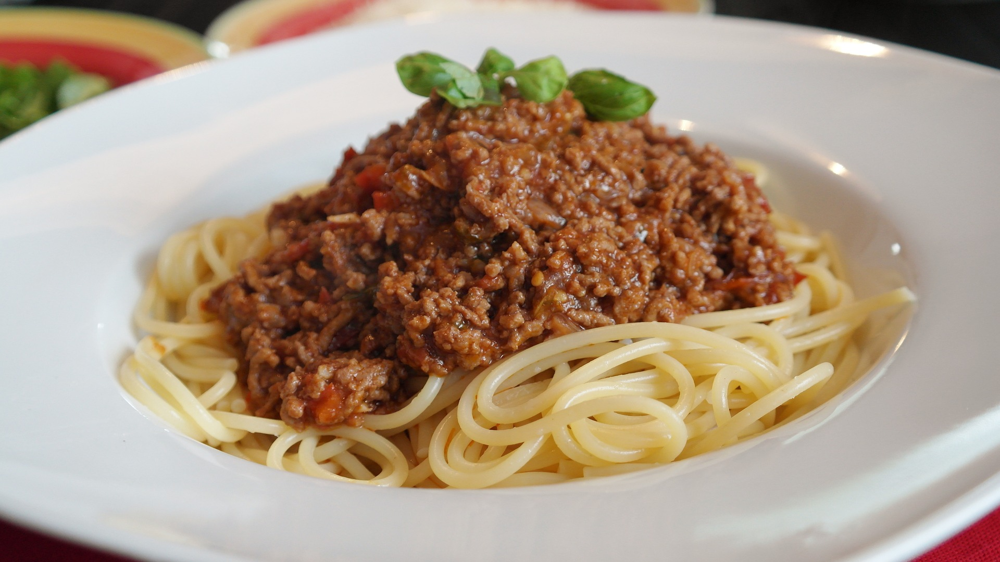

Student Recipes
Recipes of the week

- 1tbsp vegetable oil
- 500g beef mince
- 1 white oninon, diced
- 2 cloves of garlic, minced
- 2 carrots, diced
- 2 sticks of cellery, diced
- 1tbsp tomato puree
- 2 cans of tomatoes
- 250ml beef stock
- salt, pepper & sugar to taste
- 1 pack of spaghetti
- grated parmeggiano
- 1 bunch of basil, chopped roughly
- Heat up the pan on medium heat. Add the oil to a pan and let it heat up properly. Test with a wooden spoon: if bubbles rise up around the spoon, the oil is hot enough!
- Add the mince and let it brown thoroughly. Add some salt and pepper to make the beef tastyy!
- Add onions and garlic to the pan and let everything sweat until it is aromatic.
- Add carrots and cellery and let everything sweat. Add a little salt again at this stage to keep the flavour up
- Make a little well in the center and add the tomatoe puree. Let it roast for a little while.
- Mix everything thoroughly and then add the tomatoes and beef stock to the pan. STir thoroughly to get all the aromatics from the bottom of the pan.
- Turn down the heat to low, cover the pan, and let everything simmer for 45-60 minutes. Stir occasionally!
- Taste the sauce and add salt, pepper and sugar to taste.
- Cook spaghetti according to the package until they are aldente. Save a little water to liquify the sauce a little bit.
- Drain pasta and add with some of the cooking water to the sauce, stir till combined well
- Top with the chopped basil and parmeggiano to taste. Enjoy ;)

- 140g powdered sugar
- 60g fine almond flour
- 1 tsp salt
- 2 egg whites (room temp)
- 30g granulated sugar
- 1/2 tsp vanilla extract
- 2 drops food colouring
- butter cream or ganache of choice
- Combine powdered sugar, almond flour and 1/2 tsp of salt, sift the mix through a fine-mesh sieve into a large bowl
- In another bowl, beat egg whites and remaining salt with a hand mixer until you get soft peaks. Slowly add granulated suger, continue to beat till stiff peaks form.
- Add vanilla and beat till incorporated (not long at all!).If you want coloured macarons, add the colouring now.
- Add about 1/3 of the sifted almond flour to the egg whites and gently fold in with a spatula. continue to fold after the last addition until you can make a figure of an 8 while holding up the spatula
- Transfer batter into poping bag with small round tip.
- Pipe the macarons onto the baking tray fitted with parchment paper in 3cm wide circles; space them at least 2cm apart! (Usually, you need 2-3 baking trays)
- Tap the baking tray on a flat surface 5 times to release air bubbles
- Let macarons sit at room temperature for 45 minutes or until you can touch them without breaking the skin
- preheat the oven to 150° fan
- Bake macarons for 17-20 minutes or until feet are well-risen and macarons don't stick ot the paper anymore
- transfer them to a wire rack to cool completely
- Add a little bit of your favourite butter cream or ganache onto one shell, top it with another shell to make a macaron.
- Place in an airtight containr for about 24h to make them taste their best! Enjoy ;)